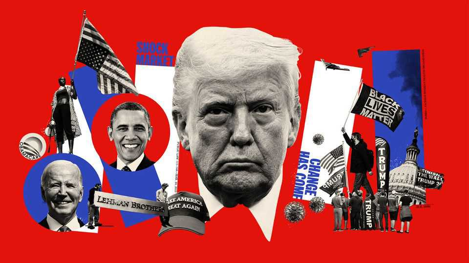

Hope, backlash and the battle for America
July 2nd 2026

2006-09Too big to fail
In August 2006 we called America’s housing market “the biggest bubble in American history” (not boasting, just stating facts; remember, we’re British). But even we could not imagine the cataclysmic events to come. Cheap credit and aggressive lending to high-risk, or “subprime”, borrowers were fuelling demand, driving up house prices. Banks were bundling these risky mortgages into complex securities, obscuring the underlying risk. In 2007, when house prices dropped, many borrowers defaulted. Mortgage-backed securities suddenly lost value, hitting banks hard. In March 2008 Bear Stearns, America’s fifth-largest investment bank, collapsed. Six months later Lehman Brothers, the fourth-largest, filed for bankruptcy. The financial system seemed on the verge of unravelling.
To restore confidence, the Bush administration proposed a $700bn bail-out, largely aimed at financial institutions deemed “too big to fail”. Republicans and Democrats somehow worked together to pass the measure and rescue the financial system. But the crisis still triggered the worst global recession since the Great Depression. Many Americans wondered whom the political elites cared most about protecting—a question that would reverberate through the country’s politics until the present day.
2008-16The meaning of Obama
On November 4th 2008—nearly four centuries after the first enslaved Africans arrived in the colony of Virginia—America elected Barack Obama its first black president. His victory reflected an increasingly diverse nation. Some 96% of blacks thought it would improve race relations. We declared: “America can claim more credibly than any other Western country to have at last become politically colour-blind.”
That was the hope, anyway. But underneath the optimism roiled anxieties about the changing ethnic make-up of America, which seemed destined to become majority non-white. Antipathy towards Mr Obama and his policies, including a massive expansion of health-care coverage nicknamed Obamacare, fuelled the rise of the Tea Party, a populist movement that would reshape the Republican Party. And there was not only anxiety and partisanship, but racism. Conservative media—and a reality-television star named Donald Trump—amplified the baseless claim that Mr Obama had not been born in America. Mr Obama’s election, then, was both a milestone in America’s long struggle over race, and a reminder that the struggle was far from over.
2012The unthinkable becomes routine
In 2012 in Newtown, Connecticut, a 20-year-old man armed with a semi-automatic rifle walked into Sandy Hook Elementary School and killed 20 children, six adults and himself. The murders of six- and seven-year-olds shocked the country. Yet, despite hopes that the massacre would lead to tougher gun laws, Congress mostly offered “thoughts and prayers”.
America’s relationship with guns has made it an outlier among rich countries. It has an estimated half-billion in circulation, the overwhelming majority acquired legally. Since Sandy Hook there have been thousands more mass shootings. Yet in much of the country gun laws have become more permissive. Gun-rights advocates argue that most restrictions violate the Second Amendment, and this century the Supreme Court has often agreed. In the view of the court’s conservative majority, at least, the founders wanted to give the right to bear arms as much protection as the right to free speech.
Someone should tweet about this
For most of American history intermediaries such as newspapers and broadcasters controlled the flow of information. Then came the internet. Suddenly anyone could make themselves read, heard or seen by millions. America—with its free-speech culture and dynamic economy—led this transformation for better and worse. American entrepreneurs built vast social-media companies whose algorithms and users came to shape online discourse
.Social media tilted the balance of power away from institutions and towards the public. Anyone with a phone could expose an abuse of power by posting a video online. But the platforms did not upgrade public discourse. Companies’ algorithms served ever more of whatever users craved most—conspiracy theories, rage-bait, titillation, cat videos. They gave strident voices more exposure than reasoned ones. The result was a more polarised political culture, one in which populist politicians flourished.
2016-20The party of Trump
When Mr Trump rode down a golden escalator to announce his presidential campaign in 2015, few pundits gave him much chance of winning. Even after he won the Republican nomination, polls showed him losing to Hillary Clinton, a former First Lady and secretary of state. But Mrs Clinton represented the establishment and voters were in an anti-establishment mood. Mr Trump stoked anger at elites, whom he blamed for shipping American jobs overseas. He also stoked resentment of undocumented immigrants, promising to build a wall along the southern border and make Mexico pay for it. His isolationist, nationalist—and pugilist—politics appealed to voters who wanted to put “America first” and “make America great again”
.Mr Trump won the presidency and, over the course of his first term, remade the Republican Party. He passed large tax cuts and appointed three justices to the Supreme Court, creating a 6-3 conservative majority. He also discarded or undermined establishment Republican support for free trade and alliances such as NATO. Many Americans recoiled from his inflammatory rhetoric, frequent lies and divisive policies. Business leaders, though, liked his tax cuts and hands-off approach to regulation. The stock market boomed.
The Trump presidency widened America’s divisions. Support for or opposition to him became a core part of many people’s identity. The red MAGA hat became a totem, worn proudly by some and loathed by others.
The great awokening
During Mr Trump’s first term debates about sex, race and power intensified. In 2017 investigative journalists reported that Harvey Weinstein, a prominent film producer, was alleged to have harassed, assaulted and raped women in Hollywood. The revelations emboldened other women to speak out about similar experiences. Using the hashtag #MeToo, they exposed the pervasive problem of sexual harassment in America and around the world. Powerful men lost their jobs or status, as behaviour that had long been tolerated was now condemned
.In 2020 George Floyd, a black man suspected of using a counterfeit $20 bill, was killed by a white police officer, Derek Chauvin, in Minneapolis. Video of Mr Chauvin kneeling on Floyd’s neck for more than nine minutes went viral, galvanising a sense in society that racism and police brutality had been tolerated for too long. Millions took to the streets, protesting under the banner of “Black Lives Matter”. Like #MeToo, the movement prompted a reckoning in American life and politics that many thought was overdue. But these and allied movements, critics said, encouraged excesses, such as ideological conformity, censorship and, in hiring and education, an emphasis on identity at the expense of merit.
2020The year the world stayed home
“A new human coronavirus has appeared in China.” So went our first (understated) report on covid-19 in January 2020. The disease would soon spread around the world, creating the biggest public-health crisis in a century. In an effort to slow it down, state and local governments imposed sweeping restrictions. For liberty-loving America, it was a lot to absorb. Public-health measures quickly became polarising, triggering resistance, especially on the right. Schools and offices closed, children lost months of classroom learning and millions of Americans began working from home. Mr Trump himself played down the virus and promoted dubious treatments
.Still, the government spent trillions of dollars to prevent an economic collapse. It also poured money into research. Just 11 months after the virus was identified, effective vaccines were produced. It was a triumph of American science and industry (working with international partners)—and, somehow, yet another source of polarisation. Anthony Fauci, the public face of the government’s response, became an object of hostility on the right. Some, including Robert F. Kennedy junior, now the health secretary, questioned the safety of the vaccines. More than a million Americans died from covid. The jabs are thought to have saved hundreds of thousands of American lives, and millions globally.
2020-21Sore loser
Mr Trump’s handling of covid did not inspire confidence, and the recession triggered by the pandemic left voters in a sour mood ahead of the presidential election in 2020. The virus led to changes in voting procedures; more states accepted mail-in ballots. In the end Joe Biden, a moderate Democrat well past retirement age, triumphed.
But Mr Trump refused to concede, claiming the election had been rigged. He made up stories about vote-counting shenanigans in Democratic strongholds. He blamed mail-in ballots, election workers and voting machines. The courts, including judges he had appointed, roundly rejected these claims. Still, he persisted in the lie, culminating in a rally on January 6th 2021, after which his supporters stormed the Capitol. The attack shocked the country. More than 140 police officers were assaulted. Members of Congress, in fear for their lives, were ushered into hiding. It was the most serious challenge to the peaceful transfer of power in modern American history.
Most Republicans soon got over their shock. The Democrat-controlled House impeached Mr Trump (for a second time). But the Senate acquitted him. He remained free to run again.
The return of great-power competition
As America wrestled with challenges to its liberal principles at home, a new, illiberal power was rising in the east. For decades politicians had argued that as China became more integrated into global markets and international institutions, it would become more invested in the American-led world order—and, ultimately, more open and free. China did become the world’s factory and second-biggest economy. But rather than liberalise, it tried to bend the world order more to its liking. In America, concerns mounted over its growing geopolitical, economic and military power. The first Trump administration made competition with China a central theme of its foreign policy, imposing stiff tariffs on Chinese goods. Mr Biden’s presidency solidified the government’s hawkish turn. America’s unipolar moment was over. A bipolar or even multipolar world was emerging
.AI did not write this
When OpenAI introduced ChatGPT in 2022 artificial intelligence entered the mainstream. Suddenly, the idea that computers could display something approaching human intelligence no longer seemed like science fiction. As with other recent technological revolutions, America led the way. No other country on Earth has the genius, capital and infrastructure necessary to dominate the field—well, except perhaps America’s rival, China
.The surge in investment has boosted the American economy. But AI has also stirred anxieties: workers worry about their jobs, national-security officials are concerned about cyber-attacks and disinformation, and environmentalists are alarmed by the enormous energy demands of data centres. AI has raised an old question: who should control a transformative technology—the state or a handful of rich entrepreneurs such as Sam Altman, Dario Amodei and Elon Musk (pictured)? The concentration of such power in so few private hands poses a profound challenge to America’s liberal principles.
The Roberts court
In 2022, nearly five decades after the Supreme Court found a constitutional right to abortion, it reversed itself, returning the issue to the states (many of which have since banned or sharply restricted the procedure). Under Chief Justice John Roberts a conservative supermajority has reshaped constitutional law more thoroughly than any court since the civil-rights era. It has expanded gun rights, redrawn the lines between church and state, in effect ended affirmative action in university admissions and curbed the power of federal agencies—all while expanding executive power and granting broad legal immunity to presidents. But it sometimes slapped Mr Trump down, for example when he claimed the power to impose tariffs at will or abolish birthright citizenship
.Supporters argue that these decisions uphold the constitution as written. Critics see unelected judges making policy from the bench. The argument over the judiciary’s role is almost as old as the republic itself.
2024-presentTrump unbound
Capitalising on high inflation, concerns about immigration and short memories, Mr Trump defeated Kamala Harris, Mr Biden’s vice-president, in the race for the White House in 2024 (after a faltering Mr Biden was pressed to drop his bid for re-election). In his second term Mr Trump has turned the dial of Trumpiness up to 11. Instead of a trade war with China, he launched a trade war with the whole world, imposing sweeping tariffs. His immigration crackdown has prompted repeated accusations of human-rights abuses. And he has proved more willing to use military force abroad than his “America First” rhetoric had implied
.Perhaps most striking of all is the transformation of the federal government itself. Mr Trump has blurred the line between public office and private interest through his family’s business ventures. He has replaced independent officials with loyalists and used the Justice Department against political opponents. The norms and institutional checks that had once constrained presidents are eroding. The republic whose history we’ve just spent seven chapters reviewing suddenly looks rather less settled.
If you can keep it
In the year this timeline begins, not long after America declared its independence, the future of the young country was in doubt. George Washington’s troops were retreating, his army close to collapse. “These are the times that try men’s souls,” wrote Thomas Paine. Yet Paine was not one for despair. “What we obtain too cheap, we esteem too lightly.” He believed deeply in the Enlightenment ideals on which the new republic rested, and wrote to stiffen America’s resolve at a moment of genuine peril. Washington is thought to have read the words aloud to his troops.
Two hundred and fifty years later, America is in need of another dose of Paine’s resolve. The country’s great liberal experiment is under strain. Politicians show little regard for many of the Enlightenment ideals the founders held dear. Americans themselves are bitterly divided, rarely agreeing on what ails the country, let alone the cures. History offers some consolation. The American experiment has faltered before—and recovered. Its story has been one of setbacks as well as renewal.
From the moment the framers set out, in the constitution’s opening sentence, “to form a more perfect Union”, the country has wrestled with its imperfections. In Philadelphia in 1787, just after the constitutional convention adjourned, an ageing Benjamin Franklin was asked, “What have we got, a republic or a monarchy?” His reply: “A republic, if you can keep it.” America’s liberal experiment remains incomplete and contested. Two and a half centuries on, Franklin’s challenge endures.■